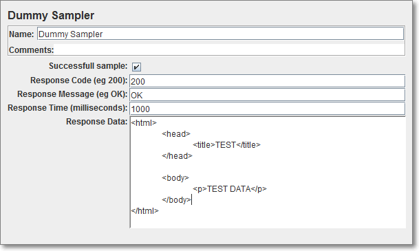

Getting Started
Test Plan
一切都從 test plan 開始。
Test Efficiency
-
透過 non-GUI mode 執行測試。
-
把可以吃
.jtl的 listener 都拿掉，改用 CLI 的--logfile來指定。至於不能吃.jtl的 listener（例如 PerfMon），還是要保留著才有作用。 -
Result file 儘可能採用 CSV 格式（因為 CSV 不支援斷行）。
-
如果 test data 很多（尤其是亂數產生的），建議先將 test data 產出再用 Config Element: CVS Data Set Config 引進來。這樣可以減少 runtime 的負載。
Use as few Listeners as possible; if using the -l flag as above they can all be deleted or disabled.
Distributed Testing
JMeter 支援 distributed testing：
-
Master - 執行 JMeter GUI，對其他 slaves 發號施令。
-
Slave - 執行
jmeter-server，接收 master 的指令，往 target 發出 requests。 -
Target - 受測的 web server。
用在 client 端無法送出大量的 requests 時，可以集合多台電腦的力量，一起對受測的 servers 施壓。在 User’s Manual > Best Practices 一開始就提到，JMeter 如果太忙的話，量測出來的時間準確度就會比較差，解法就是用 distributed testing 來解決。
Concepts
這個數字是發出 request 前與收到第一批 response 時間差（所以不單單是受測端準備第一批 response 的時間，還包括測試端準備 request 的時間）。有兩個 listener 可以觀察 response latency 的變化：
-
Response Latencies Over Time (jmeter-plugins)
-
Response Times vs Threads (jmeter-plugins)
如果 sampler 有設定 response timeout 的話，latency 大於這個門檻的 request 都會以 java.net.SocketTimeoutException 收場。
|
|
參考資料
|
Basics
CLI
jmeter 常用的 options 有：
-
-h, --help- 印出 help 訊息。 -
-v, --version- 印出 JMeter 的版本資訊。 -
-t, --testfile <jmx_file>- 指定要執行的 test plan (.jmx)。 -
-n, --nongui- 執行 non-GUI mode（預設是 GUI mode）。 -
-s, --server- 執行 server mode。 -
-l, --logfile <jtl_file>- the file to log samples to（別跟-j搞混了），例如-l result.jtl。 -
-j, --jmeterlogfile <log_file>- 指定 JMeter 輸出 log 的檔名，預設是jmeter.log。 -
-H, --proxyHost <proxy_host>- 指定 JMeter 自己往外發出 request 時，所要採用的 proxy server 的 IP 或 hostname。 -
-P, --proxyPort <proxy_port>- 指定 proxy server 的埠號。 -
-N <nonproxy_hosts>- 不走 proxy 的 host names。例如-N localhost。 -
-J, --jmeterproperty <argument>=<value>- 定義 JMeter property。例如-Jthreads=3或-Jhostname=www.foo.com。 -
-G, --globalproperty <argument>=<value>- Define Global properties (sent to servers；感覺像 STAF 有區分 local/global 一樣) -
-D, --systemproperty <argument>=<value>- Define additional System properties -
-L, --loglevel [<category>=]<level>- 例如-LDEBUG或-Ljmeter=DEBUG。
GUI Mode
執行 jmeter 就會帶出 JMeter GUI。
GUI mode 主要是用來開發 test plan，真正在測試時，多半還是會採用 non-GUI mode，這樣才能將數據保存下來（雖然 GUI mode 下也可以 Export to CSV…），需要看到圖形再載入 JMeter GUI 看即可。
GUI mode 下 listener 會一直累計資料，如果要重來，必須手動執行 Run > Clear (Ctrl+Shift-E) 或 Clear All (Ctrl-E) 才行。另外從檔案讀入 test result 時，並不會將現有的圖形清掉，方便合併多次測試的結果。（如果覺得圖形怪怪的，可以考慮做一下 clear 的動作）
WorkBench ===
Test Plan 跟 WorkBench 有什麼不同？Workbench 好像只是個暫時剪貼 elements 的地方，因為它並不會隨著 test plan 存出去；實務上就把它當做是一個工作台，可以先用 Save Selection As… 先存出去，下次再 merge 進來即可。比較常見的用法是，將其他 test plan 載到 workbench，方便複製／貼上。
考量 test efficiency，要儘可能減少 runtime 時的 listener。按照這種規劃，平常就要累積自己的 workbench（可以用 Controller: Simple 來分門別類）
|
|
如果 listener 不會跟 test plan 放在一起，平常就要另外開一支檔案在放 workbench 裡，因為看某個 test plan 的結果，總是開相同的 listener… |
Non-GUI Mode
jmeter -n 可以用來啟動 non-GUI mode。例如：
jmeter -n -t test.jmx -l -f必須要透過 -t 來指定 test plan (.jmx)
|
|
參考資料
|
Scoping Rules
Property and Variable
在 JMeter 裡，property 跟 Variable 是兩個很容易混淆的概念。兩者最大的差別就是，property 是 global (common to all threads) 的，而 variable 則是 local to a thread。
Property 定義在 jmeter.properties 裡，常用來定義 JMeter 各項設定的預設值。
在 JMeter 裡有 3 種 property：JMeter property、global property、system property。
WorkBench 底下可以新增一個 Non-Config Element: Property Display，用以檢視與修改 system 及 JMeter property 的值（但只能從 command line 的 -J 新增定義）。如果是測試過程中，想要觀查 JMeter property/variable 及 system peroperty 的變化，可以採用 Debug Sampler，它會吐出 property/variable 的值，當然結果還是得透過 Listener: View Results Tree 的 Response Data 來看。
|
|
寫 test plan 時，Test Action 也很好用，可以當做中斷點… |
UDV (User Defined Variable)
-
在 test plan 的層級設定，而且只在 test plan 開始時計算一次。
-
之後還是可以同一般的 variable 取用，例如
${__V(...)}或${__BeanShell(vars.get(...))}。
Function
Function 固定會有一個回傳值，可以像 variable 一樣用來動態代換 tree element 的設定，也因此它的用法很像是 variable，都是放在 ${...} 裡：
${__functionName}
${__functionName(arg1,arg2,...,argN)}其中 __functionName 大小寫有別，前面固定會有兩個底線，參數用逗號隔開放在括號裡。例如：
${__time(YMD)}  ${__threadNum}
${__threadNum}  ${__time(EEE\, d MMM yyyy)}
${__time(EEE\, d MMM yyyy)} 
YMD 是傳進 __time() 的參數，注意不需要用引號框起來。
| |
| 如果沒有參數的話，連括號都省了；結果看起來就像是個 variable。 | |
參數內含逗號，必須要用 \ 跳脫，否則會被視為參數間的分隔字元。
|
常用的 function 有：
-
__property(property_name[,variable_name[,default_value]])- 回傳 property_name 這個 property 的內容（如果沒有定義，但有給定預設值時，就採用 default_value）。如果有給定 variable_name 的話，這個回傳值還會額外寫進該變數。 -
__P(property_name[,default_value])- 行為上很類似__property()，只是沒有將回傳值寫進變數的功能。 -
__Random(min_value,maxvalue[,variable_name]) -
__threadNum- 目前的 thread 在所屬 group 下的編號。因此分屬兩個不同 group 的 thread 可能會有相同的 thread number。 -
__BeanShell()- 例如${__BeanShell(12*3)}會傳回 36。 -
__javaScript()- 有些地方限定使用 JavaScript（例如 If Controller 的 condition），倒不如就熟悉 JavaScript 就好，否則 BeanShell 也要懂…
|
|
Parameterized Test
那麼在 test element 裡，就可以透過 |
Proxy and HTTP Proxy Server
在 WorkBench 上點右鍵，Add -→ Non-Test Elements -→ HTTP Proxy Server（其中 Non-Test Elements 是 Test Plan 所沒有的）。HTTP Proxy Server 可以用來錄製使用者的行為，並自動建立對應的 sampler element。
錄製的 sampler element 會被放在哪裡？是由 Target Controller 來控制：
-
Use Recording Controller - 放在 test plan 裡的一個 Recording Controller 底下（當做是一個 placeholder）。
-
WorkBench > HTTP Proxy Server - 放在 HTTP Proxy Server 這個 element 底下。
Proxy server 啟動後還可以改設定，而且選項還會動態做調整，方便指定特定一個 Recording Controller（如果有多個的話）。另外 Grouping 的設定，可以用來將使用者單一操作所引發的多個 request 集合起來（由 proxy.pause 來控制，預設 1 秒鐘）：
-
Do not group samplers
-
Add separators between groups
-
Put each group in a new controller
-
Store 1st sampler of each group only
-
Put each group in a new transaction controller
URL Patterns to Include/Exclude 可以用收錄特定 requests，例如：.*sjdc\.bsh30\.lab.*
-
proxy server
-
http://jakarta.apache.org/jmeter/usermanual/get-started.html#proxy_server
-
jmeter -H my.proxy.server -P 8000 -u username -a password -N localhost
-
-
用 JMeter Proxy Recorder 錄製登入過程。
-
The Proxy Server allows JMeter to watch and record your actions while you browse your web application with your normal browser. JMeter will create test sample objects and store them directly into your test plan as you go (so you can view samples interactively while you make them).
-
（在 WorkBench，）
-
這個 proxy server 的 proxy setting 則要透過 -H 與 -P 來設定（將 browser 的 proxy 設定 localhost:8080，原來的 proxy 透過 -H/-P 設定）
-
錄製的東西會出現在 Test Plan 裡。
-
可以應用在錄製使用者的行為，加工之後就可以用來模擬平常的 load。
-
用 IE 錄製時，如果改了 proxy 的設定，一併也會影響本機其他吃 IE proxy 設定程式，所以要用
-
Monitoring
做 performance test 最難的部份，就是在送出大量 requests 時，同步蒐集多台 servers 負載的變化，才能找出其間的關聯（correlate）與效能的瓶頸。
Listener: Monitor Results
就這方面而言，JMeter 只提供有一個 Listener: Monitor Results。
它是透過 Tomcat 5 的 status servlet 來取得伺服器的效能，所以受監測的伺服器上要額外安裝 Tomcat 才行（理論上，該 servlet 可以移植到任何支援 JMX 的 servlet container）。再加上它只監測 memory 跟 CPU 的使用狀況，而且不能合併檢視多台伺服器效能的變化（例如 load 是否平均地落在 cluster 的成員），因此不是相當的實用。
|
|
Tomcat 的文件有提到 - OS level statistics on memory usage and CPU usage by the Tomcat process are displayed by the status servlet。（從 JMeter 看起來，好像在監測 JVM，而非整個 OS？） |
使用方式，可以把它想像成 “安排另外一個使用者（thread group）定期（timer）記錄 Tomcat 5 的效能輸出（HTTP Request）“，因此只要安排下面這些 elements 即可：
-
Thread Group
-
Constant Timer
-
HTTP Request
-
Monitor Results
參考資料
Components
主要區分為：
-
Thread Group
-
Logic Controller（不能直接擺在 Test Plan 底下）
-
Config Element
-
Timer - 用來控制同一 thread 下的 request 發出去之前，要先延遲多少時間。
-
Pre Processor
-
Sampler（不能直接擺在 Test Plan 底下）
-
Post Processor
-
Assertion
-
Listener
-
Non-Test Element（只會出現在 WorkBench 底下）
除了 Thread Group、Config Element 與 Non-Test Element 之外，都支援用 BSF、BeanShell 與 JSR223 來自訂。
|
|
參考資料
|
Result Status Action Handler (Post Processor)
作用範圍內的 sampler 失敗時，是否要將目前的 thread 停掉，還是中斷整個測試？這對於測試過程中一定要成功的步驟很重要。例如測試一開始的登入動作，如果發生錯誤，就沒有測試下去的必要了。
Thread Group
|-- Login (Transaction Controller)
| |-- Result Status Action Handler (Stop Test Now)
| \-- Samplers...
|-- Sync All Logins (Test Action, Pause, 0ms)
| |-- Synchronizing Timer (the number of threads)
|-- Following steps...事實上在 thread group 這一層也可以做相同的控制，只是它作用的範圍是底下所有的 sampler。
不同的 sampler 對所謂的 “失敗” 有不同的定義，例如對 HTTP request 而言，response code 是 2xx 或 3xx 表示成功（例如 303 See Other、304 Not Modified），其餘的 4xx 或 5xx 則表示失敗。（但 JMeter Plugins 的 Dummy Sampler 是個特例，它的結果是由 Successful sample 的選項來控制，並非自訂的 response code）
很可惜的是，當整個測試因為這樣而中斷時，jmeter 的 exit status 還是固定傳回 0，使得要把它整合到 script 裡有些困難… 不過還好 result file 仍然會記錄到最後一筆失敗的 response code，因此事後可以從所有的 .jtl 裡找看看有沒有不符合 rc="200" 的結果，有的話就表示有問題：
grep -Pc 'rc="[45N].*?"' *.jtlIf Controller
預設用 JavaScript 來寫，傳回 true 或 false。例如：
${COUNT} < 10 && "${VAR}" == "abcd"用起來像是 template… 變數代進來都是字串。
|
|
參考資料
|
Thread Group
只能直接擺在 test plan 底下，但透過 controller 又可以增加另一層 thread group。
JMeter 用一個 thread 來模擬單一個 user 連續的多個操作（每一個 thread 都是完全獨立的），所以許多提到 thread 的地方，都會被加註 (users)。Number of threads 的設定會影響 JMeter 將用幾個 thread 來跑這個測試，模擬幾個使用者同時存取的狀況。
透過 ramp-up period 可以錯開每個 thread 開始的時間，避免測試一開始就暴大量。目前 ramp-period 只能平均地錯開，例如有 100 個 thread，將 ramp-up period 設成 300 秒時，表示每隔 3 秒錯會開始一個 thread 的測試。之後再搭配 timer 來錯開同一 thread 下 request 間發出的間隔（甚至支援 Gaussian Random Timer 常態分佈），就能讓伺服器接收 request 的情況趨近於真實。
Logic Controller
Transaction
把所有 nested element 處理的時間（不只是 sampler）全部算入另一個邏輯上的 sampler，也就是將多個 nested element 視為一個 sampler/transaction。
Test Action (Sampler)
最實用的 action 是 Pause，它不需要產生一個 sample 就可以達成 sleep 一段時間的效果。如果沒有這個 sampler 的話，可能得透過 dummy sampler + timer 才能完成 sleep 效果（但會多出不必要的 sample）。
它畢竟是個 sampler，如果 duration 填上 0 的話，可以搭配其他 timer 做更彈性的時間控制。
|
|
它可以用在必須要有個 sampler，但又不想真正產生 sampler 的地方。例如 Test Action 底下放個 Synchronizing Timer。 |
HTTP Header Manager
-
實驗發現，thrad group 層級的 manager，裡頭的設定會跟 sampler 自己的 header manager 合併起來。
Controller: Once Only
通常擺在 Thread Group 底下，一個 thread 只會做一次登入的動作就夠了。
Timer: Uniform Random
亂數決定要延遲的時間（下面兩個數字的加總）：
-
Random Delay Maximum - 剛數決定一個時間，但不超過這個值。
-
Constant Delay Offset - 固定的時間。
Synchronizing Timer
可以用來集聚一定數量的 thread/user 後一起釋放出去，造成瞬間的大量。當然搭配 Test Action 也可以用來等所有人都完成上一個動作，再往下走；下一步又可以用 timer 來錯開大家的時間…
|
|
Number of Simulated Users to Group by 不能填成 0。填成 0 的話會卡在那裡，不會往下走。 |
Gaussian Random Timer
Timer: Gaussian Random 有兩項設定：
-
Deviation（偏差）
-
Constant Delay Offset
基本上，request 的間隔由固定的 Constant Delay Offic 加上 Deviation 乘以 0.0 ~ 1.0 的亂數（Gaussian distributed value）來決定。
Sampler: Dummy (jmeter-plugins)

除了可以用來測試 Regular Expression Extractor 之外，也很常用來撰寫 example test plan，jmeter-plugins 的官方文件就是這麼做的。
Sampler: HTTP Request
-
Send Files With the Request 如果只給一個檔案，Parameter Name: 沒給的話，該檔案的內容就會被視為 body 送出來。方便用來傳送 binary 的 body。
-
Path 裡不能增 host name 這些東西（例如
/app/index.html），要拆開放到 Server Name or IP, Port Number… 等，但 query string 是可以直接寫在 Path 裡的，例如/app/index.php?q=java，只是 query string 太長時不方便維護而已。 -
實務上，可以將固定的 query string 寫在 Path 裡，剩下會變動的部份透過 UI 一項項指定，可以個別做 encode 跟 include equals 的設定。其中 include equals 指的是如果沒有 value 的話，是否要強制寫成
param=。
Post Processor: Regular Expression Extractor
掛在 sampler 底下，它的功能如下：
-
用 Perl regular expression 從 server response 提取某些片段出來。
-
將這些片段（group）套進 template 組出另一個字串。
-
將組出來的字串指定為某個變數的內容，變數的名稱由 reference name 來設定。
Regular expression 預設會區分大小寫。如果想要忽略大小寫的差異，可以在前面加上 (?i)。
Template 裡用 $n$ 參照 group n 的內容。例如 $1$ 指的是 group 1，而 $0$ 則是一整段的內容。
除了將套上 template 的內容寫到 reference name 指定的變數名稱之外（假設是 refName），下面這些變數也會被設定：
-
refName_gn- 第 n 個 group 的內容，例如url_g0、host_g1等。 -
refName_g- Groups 的數量
可以針對 server response 的幾個部份做提取：
-
Body
-
Body (unescaped) - 將
<轉回<的動作？ -
Headers
-
URL
-
Response Code - 例如 "200"。
-
Response Message - 例如 "OK"。
開啟 DEBUG level，這個 processor 就會將收到的 HTML 印出來：
jmeter ... -Ljmeter.extractor.RegexExtractor=DEBUG2011/07/27 20:03:40 DEBUG - jmeter.extractor.RegexExtractor: Input = <!DOCTYPE html PUBLIC "-//W3C//DTD XHTML 1.0 Transitional//EN" "http://www.w3.org/TR/xhtml1/DTD/xhtml1-transitional.dtd">
<html xmlns="http://www.w3.org/1999/xhtml" xml:lang="en" lang="en">
...
</body>
</html>
...
2011/07/27 20:38:34 DEBUG - jmeter.extractor.RegexExtractor: Regex Extractor result = xxx | 這個方法某種程度上比 Listener: Save Responses to a File 或 Listener: View Results Tree 好用，因為可以確定 regex 是否真的有把我們要的部份提取出來。 |
Listener
Listener 主要是將蒐集到的測試結果（test result），以不同的方式表現出來。
|
|
雖然每個 listener 都提供有一個 Write results to file / Read from file 的欄位，但實際上多個 listener 最後寫出的內容都是一樣的（頂多也只是欄位數量或 XML/CSV 格式的不同而已）。這間接說明了為什麼 CLI 單一個參數 --logfile 就可以滿足多個 listener。 |
|
|
注意這裡 CSV result file 跟在圖形上做 Export to CSV… 的結果是不同的，前者則是 raw data，後者則是將統計後的數據。Export to CSV… 輸出的結果，可以餵給其他圖形化的工具，例如 Gnuplot、OpenOffice.org Calc 等。 |
|
|
分析 .jtl 實際的輸出之後發現，取樣的時間點都是在 sampler 完成之後，所以最早回來的 request 會被記在前面（也可能是發生錯誤就直接回來了），反倒是花很長時間成功被處理掉的 request 會被記錄在後面。Sampler # 是該 sample result 在 .jtl 裡出現的順序，要看 thread name 才能知道發出的順序。 |
在 GUI mode 下，建議不要去設定 Write results to file / Read from file，不過光從 CLI 給定的 --logfile 額外輸出 test result，卻又沒法指定輸出的細節？？？目前的解法就是安排一個 Simple Data Writer，只有它才去設定檔名及要輸出的細節。
如果 result file 已經存在，新的測試結果會附加在檔案後面。
在 GUI mode 或 non-GUI mode 下的 --logfile，哪些 test result 會被記錄下來，是組態在 jmeter.properties 裡。
bin/jmeter.properties...
#---------------------------------------------------------------------------
# Results file configuration
#---------------------------------------------------------------------------
# This section helps determine how result data will be saved.
# The commented out values are the defaults.
# legitimate values: xml, csv, db. Only xml and csv are currently supported.
#jmeter.save.saveservice.output_format=xml
# true when field should be saved; false otherwise
# assertion_results_failure_message only affects CSV output
#jmeter.save.saveservice.assertion_results_failure_message=false
#
# legitimate values: none, first, all
#jmeter.save.saveservice.assertion_results=none
#
#jmeter.save.saveservice.data_type=true
#jmeter.save.saveservice.label=true
#jmeter.save.saveservice.response_code=true
# response_data is not currently supported for CSV output
#jmeter.save.saveservice.response_data=false
# Save ResponseData for failed samples
#jmeter.save.saveservice.response_data.on_error=false
#jmeter.save.saveservice.response_message=true
#jmeter.save.saveservice.successful=true
#jmeter.save.saveservice.thread_name=true
#jmeter.save.saveservice.time=true
#jmeter.save.saveservice.subresults=true
#jmeter.save.saveservice.assertions=true
#jmeter.save.saveservice.latency=true
#jmeter.save.saveservice.samplerData=false
#jmeter.save.saveservice.responseHeaders=false
#jmeter.save.saveservice.requestHeaders=false
#jmeter.save.saveservice.encoding=false
#jmeter.save.saveservice.bytes=true
#jmeter.save.saveservice.url=false
#jmeter.save.saveservice.filename=false
#jmeter.save.saveservice.hostname=false
#jmeter.save.saveservice.thread_counts=false
#jmeter.save.saveservice.sample_count=false
#jmeter.save.saveservice.idle_time=false
# Timestamp format - this only affects CSV output files
# legitimate values: none, ms, or a format suitable for SimpleDateFormat
#jmeter.save.saveservice.timestamp_format=ms
#jmeter.save.saveservice.timestamp_format=yyyy/MM/dd HH:mm:ss.SSSS
# For use with Comma-separated value (CSV) files or other formats
# where the fields' values are separated by specified delimiters.
# Default:
#jmeter.save.saveservice.default_delimiter=,
# For TAB, since JMeter 2.3 one can use:
#jmeter.save.saveservice.default_delimiter=\t
# Only applies to CSV format files:
#jmeter.save.saveservice.print_field_names=false
# Optional list of JMeter variable names whose values are to be saved in the result data files.
# Use commas to separate the names. For example:
#sample_variables=SESSION_ID,REFERENCE
# N.B. The current implementation saves the values in XML as attributes,
# so the names must be valid XML names.
# Versions of JMeter after 2.3.2 send the variable to all servers
# to ensure that the correct data is available at the client.
# Optional xml processing instruction for line 2 of the file:
#jmeter.save.saveservice.xml_pi=<?xml-stylesheet type="text/xsl" href="../extras/jmeter-results-detail-report_21.xsl"?>
...
輸出的格式預設採用 XML (.jtl)
| |
| 最常把這個設定打開，才能將 active thread 的數量記錄下來。 |
如果有自訂的需求，建議寫在 user.properties 裡。
bin/user.properties...
#---------------------------------------------------------------------------
# Results file configuration
#---------------------------------------------------------------------------
jmeter.save.saveservice.thread_counts=truetest result 要寫到哪個 .jtl 或 .csv 檔（.jtl 是個 XML 檔，比 .csv 詳細，而且 CSV 不支援斷行），
JTL 裡一堆簡寫的 XML attribute，對應 Sample Result Save Configuration：
-
Save As XML
-
Save Response Headers (XML)
-
Save Response Code →
rc -
Save Label →
lb -
Save Response Data (XML)
-
Save Success →
s（true/false），error rate 應該就是看這個吧？ -
Save Time Stamp →
ts -
Save Response Filename
-
Save Hostname →
hn（由哪一台主機產出這個 sample） -
Save Field Names (CSV)
-
Save Request Headers (XML)
-
Save Data Type →
dt -
Save Latency →
lt（初次收到 response 的時間，milliseconds） -
Save Sampler Data (XML)
-
Save Thread Name →
tn -
Save URL
-
Save Active Thread Counts →
na及ng，前者看全部的 thread group，後者則只看這個 sample 所屬的 thread group。 -
Save Idle Time
-
Save Assertion Failure Message
-
Save Assertion Results (XML)
-
Save Encoding →
de -
Save Response Message →
rm -
Save Sub Results (XML) - 利如用 transaction controller 將多個 sampler 包起來時。
-
Save Elapsed Time →
t(milliseconds) -
Save byte count →
by -
Save Sample and Error Counts →
sc及ec。其中sc固定是 1，而ec只能是 0 或 1，除非合併多個 sample result。
Listener: View Results in Table
-
可以用來看 sampler 回來的順序，可以用來確認某些動作發生在其他動作之前。
-
可惜不能排序。
Listener: Composite Graph (jmeter-plugins)
可以將兩個以上的圖形合併顯示（事實上，合併的對象是圖形裡面的 row）。如果合併的圖形原先 Y 軸採用不同的單位，或者值域差異太大，會自動放大數值（並標示 x10, x100 等），方便檢視不同線條的起伏（畢竟實際的數值並不重要，重要的是起伏間的關係）。
|
|
有時候 Force maximum Y axis value to nnn 可以取消 x10 或 x100 的行為。有時候，別人會來挑戰你說為什麼要放大，會產生不必要的誤會 |
|
|
Composite Graph 要在跑測試（或載入 result file）之前安排好才行（放在 WorkBench 下也可以），等 sample result 進來時，左側才會有項目可以選到右側做合併。不過選到右側的項目如果有存檔的話，下載叫進來就可以直接用了。 |
設計上似乎只能比較同一次的測試（相同的變因），對不同面向的影響。因為載入兩次的測試結果，線條並沒有辦法疊在一起（即便 use relative times 有打開），或許要從 .jtl 或 .jppm 裡記錄的絕對時間動手腳吧？（reset_ts.py）又或者用其他工具整合匯出節的 CSV 檔。0.4.2-RC2 只修復線條上的刻度，但合併不同時期的測試結果還是有問題。
|
|
合併圖形時，顏色沒得選（紅、藍、紫…），順序也是按照 listener name，如果想排序的話，只能從 listener name 下手。 |
|
|
合併後的圖形如果很複雜的會，可以考慮 Settings 裡的 Limit number of points in row to nnn points （單位時間內取樣的次數；次數太少會失真？次數太多會很難讀… 50 好像滿適合用來看出線條間的增幅比例） 跟 Force maximum Y axis value to nnn 讓可讀性提高。 |
PerfMon: Active Threads Over Time
秀出同一時間，各個 thread group 下 active thread 的數量，通常這就是受測端的 concurrent user。
PerfMon: Response Latencies Over Time
如果有設定 response timeout 而得到 java.net.SocketTimeoutException，latency 欄位（lt）的值會是 0 而非接近 response timeout 的值。也因此有發生 response timeout 的 sample 都會落在圖形的底部（而不是剛好落在 response time），不容易識別出來。
Aggregate Graph/Report
-
可以顯示出 Error%
-
會合併顯示同名的 sampler，即便分屬於不同的 sampler element。
Save Responses to a File
把 server response 寫進檔案（跟 Simple Data Writer 將 test result 寫出不同）。如果內容無法判斷，副檔名會是 .unknown。
Data Driven / Paramaterized
User Variables
每個 thread/user 都要採用不同的值時（例如用不同的帳號登入），可以將 Config Element: CVS Data Set Config 加到 thread group 底下，每個 thread 就會逐行套用到 CVS 檔裡頭不同行的資料。
Issues
HTTP_Non HTTP response code:java.net.BindException
這個問題源自 Windows 限制短時間內對外的連線數，如果超過這個限額就會丟出 java.net.BindException（不太直覺？）。
解決除了去改 registry 之外，另一個根本的解法就是移到 Linux 下去執行。
參考資料
-
Packt - Apache JMeter (2008-06)
-
Badboy - 可以錄製 browser 裡的操作，然後轉成 JMeter 的格式。
-
performancewiki.com - automate performance testing with STAF and JMETER
-
Narya性能測試（二） - Thinking in Action - ITeye技術網站 (2011-01-12)
-
壓力測試（性能測試）和性能調優實戰---jmeter、jamon、jconsole - sunqi - ITeye技術網站 (2010-11-10)
-
Swarm of XeBees » Performace Testing made easy using Badboy and JMeter (2010-08-17)
-
Stress Testing your website with Apache jMeter | Anuj Gakhar’s Blog (2010-06-23)
-
Functional Testing with JMeter (2008-08)
-
JMeter tips - JavaWorld (2005-07-11)
延伸閱讀
參考資料
-
JMeter tips - JavaWorld (2005-07-11)